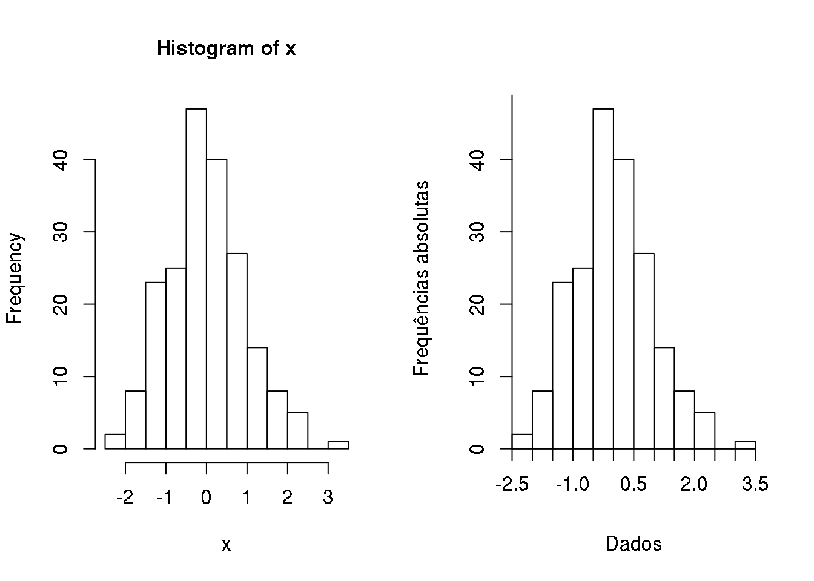
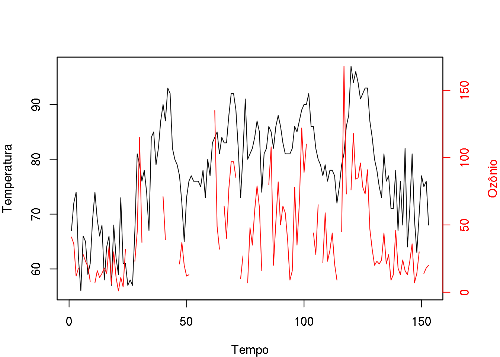

Gráficos no R
O R possui um sistema básico de gráficos (base graphics), com diversas funções disponíveis através do pacote graphics, que já vem instalado e carregado por padrão em toda sessão do R.
Para ver todas as opções dos gráficos base (padrão) do R, veja
library(help = graphics)Além dos gráficos básicos, existem mais dois pacotes para gráficos no R, o lattice e o ggplot2. o pacote lattice é mais antigo, e também já está incluído na instalação básica do R, embora não esteja carregado por padrão. Para carregá-lo, basta usar library(lattice). O lattice é muito útil para a visualização multivariada de dados, ou seja, quando temos muitas variáveis e queremos visualizar todas (ou algumas) conjuntamente. O pacote ggplot2 é mais recente, e é uma implementação moderna dos conceitos expostos no livro The Grammar of Graphics. O ggplot2 é um pacote que precisa ser instalado a parte no R.
Os comandos para gráficos se dividem em três grupos:
- Alto-nível: são as funções que criam novos gráficos, com eixos, títulos, etc. Exemplo:
plot(),hist(),barplot() - Baixo-nível: funções que adicionam mais informações (pontos, linhas, texto, etc.) a um gráfico já existente. Exemplo:
lines(),points(),legend() - Interativo: funções que permitem adicionar ou extrair informações a um gráfico já existente, de modo interativo. Exemplo:
locator()
Ainda existem uma série de parâmetros gráficos que podem ser manipulados e customizados, a partir dos argumentos da função par().
Terminologia dos parâmetros mais comuns
Anotações

Regiões do gráfico

Regiões de múltiplos gráficos

Sistema de coordenadas

Tipos de linhas (lty)

Tipos de pontos (pch)

Tipos de plot (type)

Expressões matemáticas (expression())

Exemplos dos recursos gráficos
O R vem com algumas demonstrações (demos) de seus recursos “embutidas” no programa. Para listar as demos disponíveis digite na linha de comando:
demo()Para rodar uma das demosntrações, basta colocar o nome entre os parênteses. As demos são úties para termos uma idéia dos recursos disponíveis no programa e para ver os comandos que devem ser utilizados.
Por exemplo, vamos rodar a demo de recursos gráficos. Note que os comandos vão aparecer na janela de comandos e os gráficos serão automaticamente produzidos na janela gráfica. A cada passo voce vai ter que pressionar a tecla Enter para ver o próximo gráfico.
- No terminal (prompt) do R, digite
> demo(graphics)
demo(graphics)
---- ~~~~~~~~
Type <Return> to start :
- Pressione a tecla Enter
- A demo será iniciada e uma tela gráfica irá se abrir. Na tela de comandos serão mostrados comandos que serão utilizados para gerar um gráfico seguidos da mensagem:
Hit <Return> to see next plot:
- Inspecione os novos comandos e depois pressione novamente a tecla Enter. Um novo gráfico surgirá ilustrando outros recursos do programa. Prossiga inspecionando os gráficos e comandos e pressionando Enter até terminar a demo. Experimente outras demos gráficas como
demo(persp)edemo(image), por exemplo. - Para ver o código fonte (comandos) de uma demo você pode utilizar comandos como se seguem (e de forma análoga para outras demos):
file.show(system.file("demo/graphics.R", package = "graphics"))
file.show(system.file("demo/image.R", package = "graphics"))
file.show(system.file("demo/persp.R", package = "graphics"))Algumas configurações de gráficos no R
Gráficos múltiplos na janela gráfica
O principal recurso para controlar o aspecto de gráficos no R é dado pela função de configuração par(), que permite configurar formato, tamanho, subdivisões, margens, entre diversas outras opções.
Por exemplo par(mfrow = c(1, 2)) divide a janela gráfica em um frame que permite acomodar dois gráficos em uma linha e par(mfrow = c(3, 4)) permite acomodar 12 gráficos em uma mesma janela arranjados em três linhas e quatro colunas. O comando layout() permite dividir a janela gráfica de forma ianda mais flexível.
Gráficos em arquivos
Por padrão, os gráficos gerados são mostrados em uma janela na tela do computador, ou seja, a tela é o dispositivo de saída (output device) padrão para gráficos. Para produzir gráficos em arquivos basta redirecionar o dispositivo de saída para o formato gráfico desejado. O código a seguir mostra como gerar um um histograma de 200 amostras de uma distribuição normal padrão em um arquivo chamado figura1.pdf em formato pdf.
pdf("figura1.pdf")
hist(rnorm(200))
dev.off()No código acima, a função pdf() abre um novo dispositivo de saída, ou seja, qualquer gráfico que seja criado depois desse comando será direcionado para esse dispositivo, que no caso é o arquivo .pdf. Portanto o gráfico não será mostrado na tela! Para gerar a figura no arquivo de fato, é necessário então fechar o dispositivo de saída, usando a função dev.off(). Note que esta última função é obrigatória para gerar o gráfico no arquivo figura1.pdf. Após executar dev.off(), o dispositivo de saída volta automaticamente a ser a tela do computador.
Caso deseje-se o arquivo em outro formato gráfico, a função adequada deve ser chamada. Por exemplo, jpeg() para formatos .jpg (ou .jpeg), png() para arquivos .png, que são muito usados em páginas web, postscript() para gráficos em formato .ps ou .eps, entre outros. Cada uma das funçõese possuem argumentos adicionais que permitem controlar tamanho, resolução, entre outros atributos do arquivo gráfico.
Modificando gráficos
Gráficos no R são tipicamente construídos com opções padrão definidas pelo programa, mas podem ser modificados ou ter elementos adicionados conforme desejado pelo usuário.
A melhor forma para entender como modificar gráficos é pensar que cada elemento pode ser controlado por uma função, e elementos são adicionados ao gráfico para cada chamada de função específica, de forma semelhante ao que se faria ao desenhar em um papel. Um exemplo típico é a adição de legenda a um gráfico já feito, o que pode ser feito por legend().
Muitos parâmetros de um gráfico podem ser alterados através dos argumentos da própria função que está sendo utilizada (funções de alto-nível). No entanto, mutas vezes são necessárias funções auxiliares, ou de baixo-nível, para adicionar “camadas” ao gráfico.
NOTA: Se um gráfico já feito deve ser mudado, então é necessário repetir os comandos anteriores um a um até chegar no que se deseja modificar. Este comportamento difere de alguns outros programas que permitem modificar um gráfico já desenhado.
Veja na figura abaixo um exemplo frequentemente solicitado por usuários. No gráfico da esquerda está o histograma dos dados de uma amostra de tamanho 200 produzido com opções padrão (default) da função hist(). No gráfico da direita nota-se que o título foi removido, o texto dos eixos foi modificado e a posição dos eixos foi alterada fazendo com que as barras do histograma sejam desenhadas junto aos eixos. Para isto, na chamada de hist() passamos um valor vazio para o argumento main, o que causa a remoção do título do gráfico. Os textos dos eixos são definidos por xlab e ylab. Finalmente, para modificar os eixos, iniciamos removendo os eixos do gráfico inicial com axes = FALSE, e depois os adicionamos com axis() na posição desejada, sendo que no primeiro argumento da função as opções 1 e 2 correspondem aos eixos das abcissas e ordenadas, respectivamente.
## "Fixa" a geração de números aleatórios
set.seed(123)
## 200 valores de uma N(0, 1)
x <- rnorm(200)
## Divide a janela gráfica em 1 linha e 2 colunas
par(mfrow = c(1, 2))
## Histograma padrão
hist(x)
## Histograma modificado
hist(x, main = "", axes = FALSE,
xlab = "Dados", ylab = "Frequências absolutas")
# Insere o eixo X (1)
axis(1, at = seq(-2.5, 3.5, by = 0.5), pos = 0)
# Insere o eixo Y (2)
axis(2, at = seq(0, 50, by = 10), pos = -2.5)
## Volta a janela gráfica para 1 linha e 1 coluna
par(mfrow = c(1, 1))
Alguns exemplos
Gráfico com dois eixos Y distintos
Considere fazer um gráfico de duas variáveis de grandezas distintas, \(Y_1\) e \(Y_2\) contra uma mesma variável \(X\). Isto pode ser útil, por exemplo, para ver se as flutuações são comuns com a variação nos valores de \(X\). Com isso, podemos fazer um gráfico colocando eixos distintos para \(Y_1\) e \(Y_2\), um à esquerda e outro a direita do gráfico.
Vamos considerar o conjunto de dados airquality já disponível no R que possui as medidas de ozônio, radiação solar, velocidade do vento e temperatura em Nova York de Maio a Setembro de 1973.
data(airquality)
str(airquality)## 'data.frame': 153 obs. of 6 variables:
## $ Ozone : int 41 36 12 18 NA 28 23 19 8 NA ...
## $ Solar.R: int 190 118 149 313 NA NA 299 99 19 194 ...
## $ Wind : num 7.4 8 12.6 11.5 14.3 14.9 8.6 13.8 20.1 8.6 ...
## $ Temp : int 67 72 74 62 56 66 65 59 61 69 ...
## $ Month : int 5 5 5 5 5 5 5 5 5 5 ...
## $ Day : int 1 2 3 4 5 6 7 8 9 10 ...Nos comandos a seguir criamos o gráfico da figura abaixo com as evoluções das medidas de temperatura e níveis de ozônio no período, colocando a escala de cada uma delas em um dos eixos verticais.
## Altera o tamanho das margens do gráfico
par(mar = c(4, 4, 4, 4))
## Gráfico de temperatura
plot(airquality$Temp, type = "l", xlab = "Tempo", ylab = "Temperatura")
## Permite que um novo gráfico seja adicionado em outro já existente
par(new = TRUE)
## Gráfico de ozônio
plot(airquality$Ozone, type = "l", axes = FALSE, frame = TRUE,
ann = FALSE, col = 2)
# Adiciona o eixo à direita
axis(4, col.axis = 2, col = 2)
# Adiciona o título do eixo à direita
mtext("Ozônio", side = 4, line = 3, col = 2)
Gráficos exploratórios
Considere que você tem observações de uma variável quantitativa \(Y\), possivelmente com a presença de mais uma ou duas (ou mais) variáveis categóricas, \(X\), \(Z\), etc., que geralmente possuem alguns valores distintos, os níveis.
No exemplo abaixo, a variável \(Y\) pode ser a expectativa de vida ou o PIB per capita, as variáveis \(X\), \(Z\), etc. podem ser o país, o continente, ou o ano.
O que você gostaria de saber sobre \(Y\) (ignorando as outras variáveis)? Agora pense nas possíveis relações entre \(Y\) com \(X\), \(Z\), …, o que você gostaria de saber?
- Média, mediana, moda?
- Variância, amplitude, coeficiente de variação?
Resumos:
- Resumo dos cinco números
- Boxplots
- Gráficos de barras
- Histogramas
Gráficos para uma única variável
Gráficos para duas variáveis

Este conteúdo está disponível por meio da Licença Creative Commons 4.0